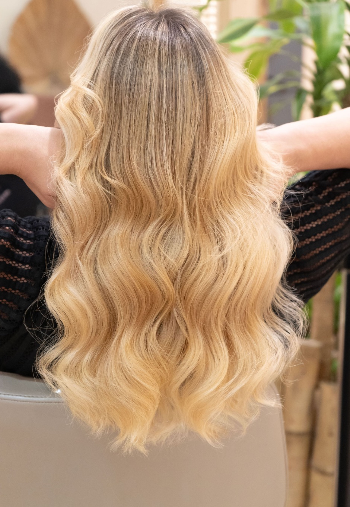
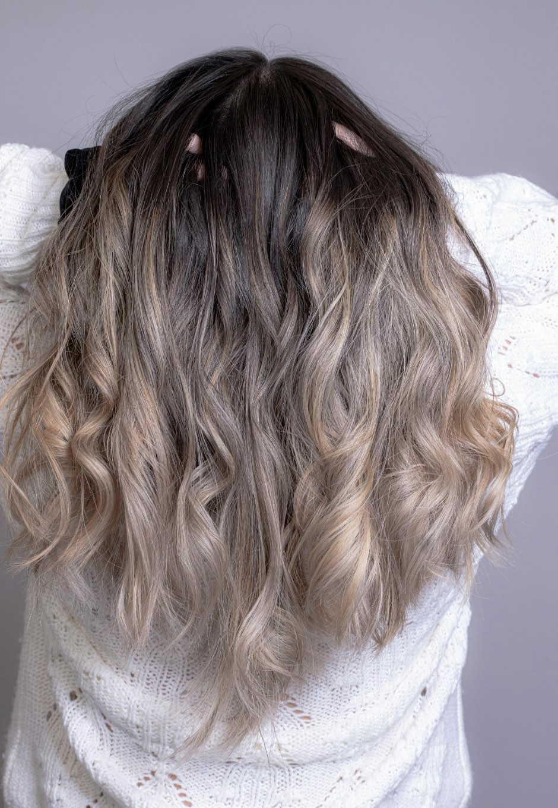
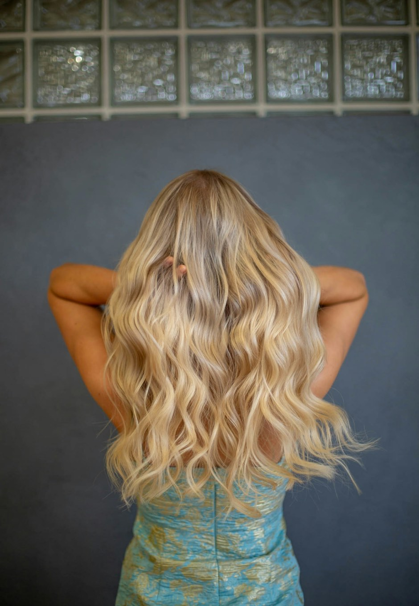
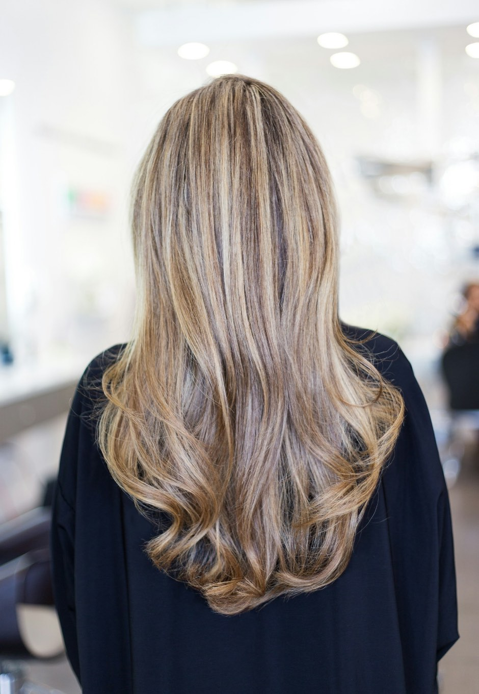
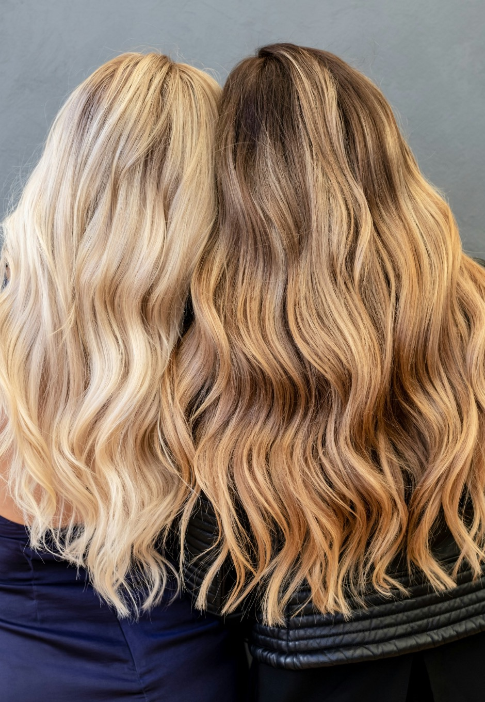
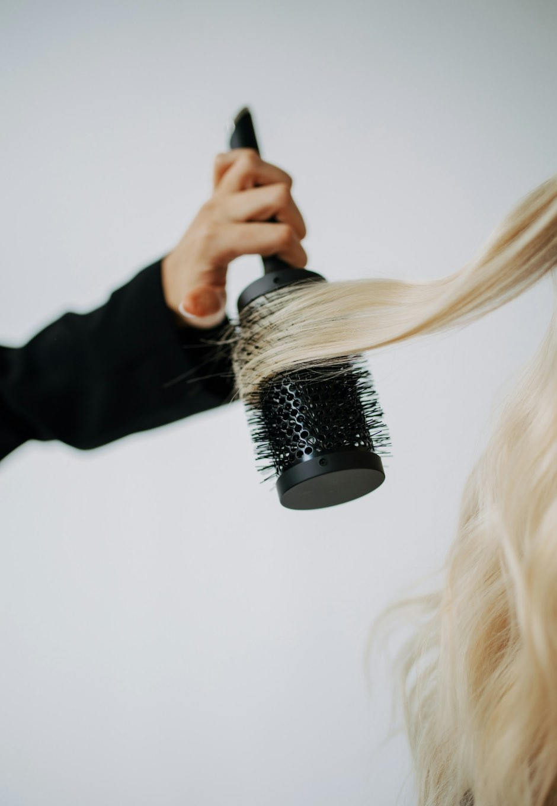
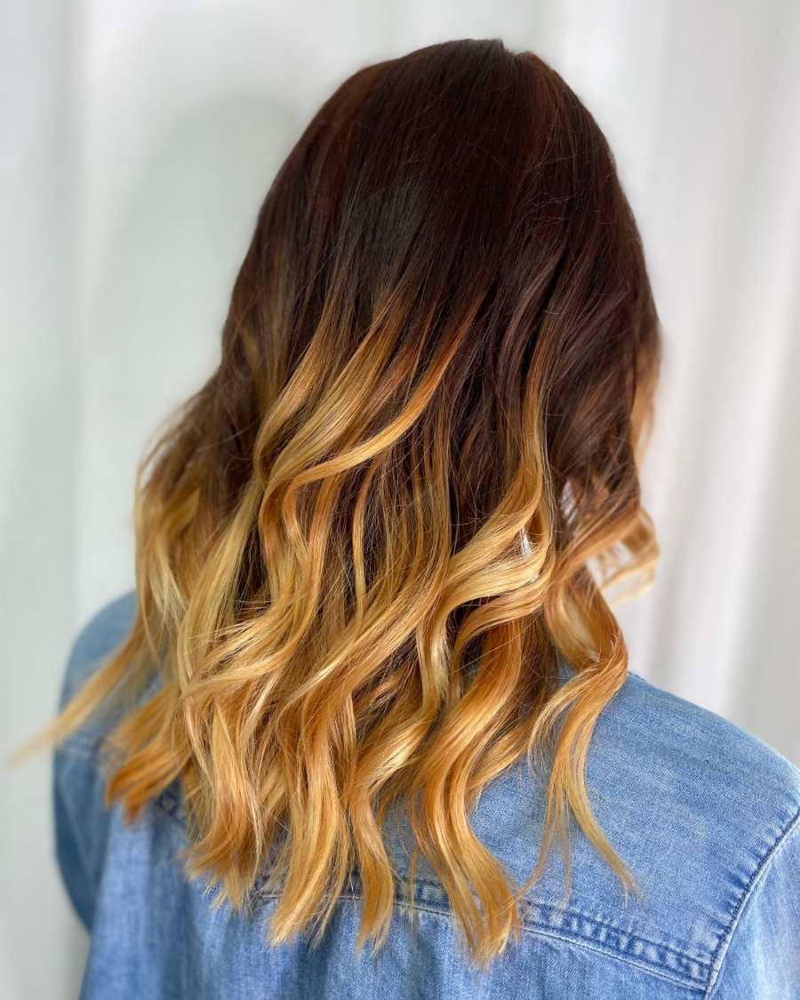
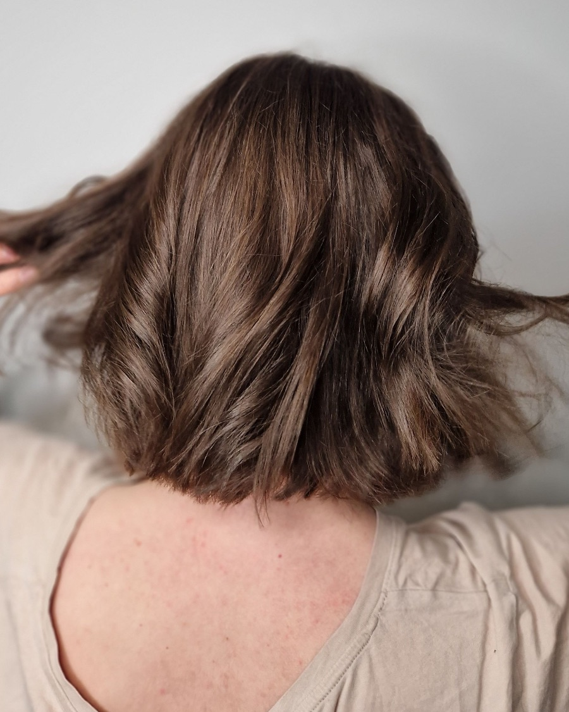

Blond-Spezialistin · Frankfurt
Strähnen, Balayage und Tonierung für kühle, elegante Blondtöne. Und für Haar, das dabei gesund bleibt.
Ich spreche: Ukrainisch Polnisch Deutsch

Gute Farbe beginnt mit Zuhören: erst verstehen, was Sie sich wünschen, dann Schritt für Schritt dorthin.
Über mich
Ich bin Lena, Hair Stylistin und Coloristin im Haaratelier Muster in Frankfurt. Mein Schwerpunkt sind kühle, elegante Blondtöne: von weichen Strähnen bis zum hellen Platinblond.
Gesundes Haar ist mir genauso wichtig wie die Farbe. Deshalb arbeite ich in Schritten und berate Sie ehrlich, was für Ihr Haar möglich ist.
Leistungen
Richtpreise. Der Endpreis hängt von Länge und Dichte des Haares ab.
Arbeiten





Vorher / Nachher
Ziehen Sie den Regler, um zwei Looks zu vergleichen.
Demo-Slider mit Beispielbildern — kein echtes Vorher/Nachher


VorherNachherBlond-Guide
Vier Tipps von Lena für die Zeit zwischen zwei Terminen.
Termin
Freie Zeiten sehen und direkt einen Termin wählen, rund um die Uhr.
Kontakt